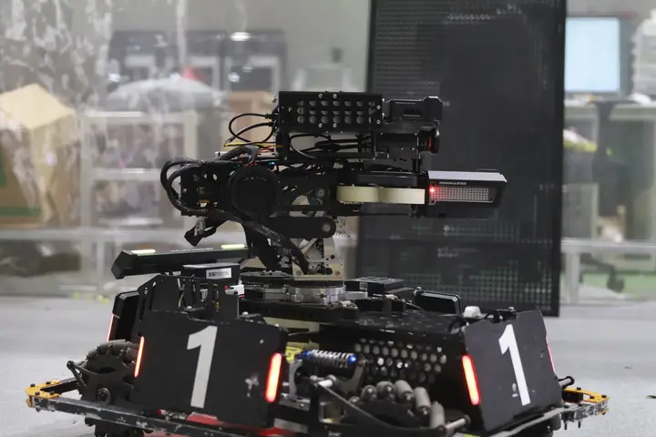
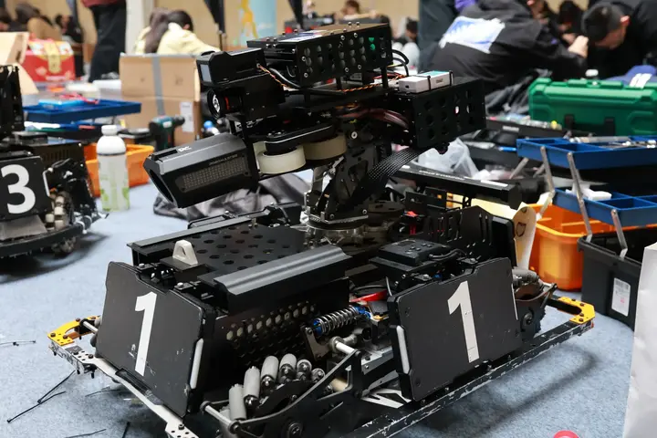
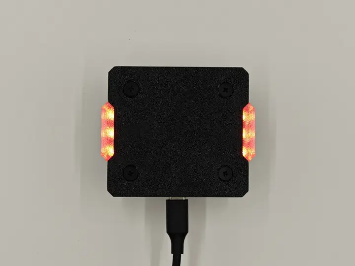

机甲与团队
七个兵种，五个技术方向，一条从需求到赛场的研发链路。 这里是我们把想法变成机甲的方法。
七种角色，
一支队伍的完整拼图
RoboMaster 的对抗是体系化的：输出、控制、后勤、信息与空中支援缺一不可。 每种兵种都有自己的性能边界与胜负权重。
英雄机器人
Hero Robot · 高伤害攻坚承担主要火力输出。大口径发射机构的弹道一致性、供弹连续性以及高热量下的射击节奏，决定它在关键交火中的压制力。
工程机器人
Engineer · 后勤与救援负责取弹、救援与场地交互。机械臂的定位精度、抓取容错与动作耗时，直接决定队伍在劣势局里的翻盘可能。
步兵机器人
Standard · 主力输出队伍数量最多、机动性最强的单位。底盘灵活性与云台稳定性共同决定命中率，操作手手感与视觉自瞄的配合是核心课题。
哨兵机器人
Sentry · 全自主巡逻沿轨道自主移动，无需操作手干预。目标优先级判定、路径决策与长时间运行的稳定性，是它的全部战场。
空中机器人
Aerial · 制空支援高速争夺制空权的飞行单位。飞控调参、动力冗余与结构轻量化之间必须取得平衡，任何一处短板都会在对抗中被放大。
飞镖系统
Dart · 远距打击以远距离精确命中换取战术优势。发射一致性、气动稳定性与命中判定算法共同决定它能否真正改变战局。
雷达站
Radar · 信息优势为全队提供对手位置信息。多目标追踪、坐标解算与信息推送的延迟，直接压缩对手的行动空间。
说明：兵种构成与具体性能参数以当赛季 RoboMaster 官方规则为准；本站描述聚焦于战队在各兵种上的研发侧重。



Tech Stack
技术栈：
从毫米到毫秒
机械关心毫米级的装配公差，电控关心毫秒级的控制周期，视觉关心每一帧的稳定性。 五个方向在同一台机器上互相牵制，也互相成就。
需求与方案
明确兵种定位与性能目标，输出可评审的方案。
结构设计
三维建模与运动校核，确定装配关系与公差。
打样加工
快速打样验证关键结构，缩短试错周期。
装配调试
整机装配、走线与固件联调，逐项排除干扰。
对抗测试
在真实对抗中收集数据，定位瓶颈。
复盘迭代
归档问题与改进项，进入下一轮循环。
被记录下来的
每一次进步
轮腿底盘、飞镖系统、自制电调与快速打样——这些关键词背后，是一个个具体的技术攻坚。


Join
这些技术，
都可以从零学起
我们更看重你拆解问题的耐心，而不是你已经会多少工具。